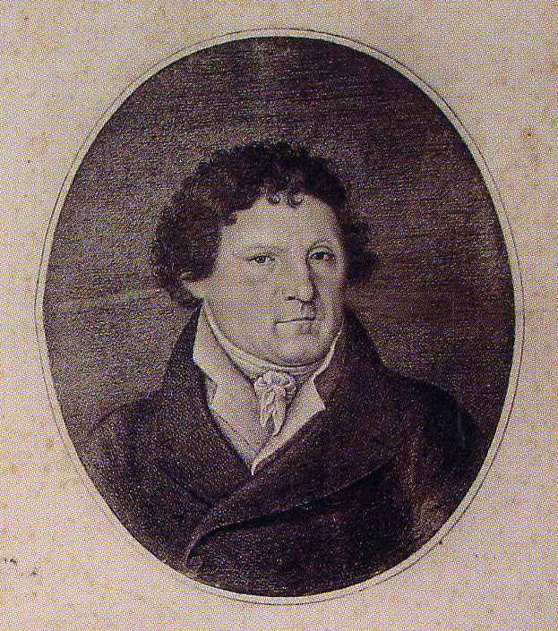

the judica collection
Thanks to Gabriele’s passionate archaeological research and Gaetano Judica’s deep interest, the collection was formed in the Museum of Palazzo Cappellani. It includes many items from various periods, but the origins are known of only a few, as shown by the inventory drawn up in 1931. Although many objects come from the excavations lead by Gabriele Judica in Akrai, others have been added such as those from the Ferla Collection; the family who had estates in the territory of Monte Casale (the ancient Kasmene), or purchased, such as those coming from the area of ancient Leontinoi. We also know that Gabriele Judica was in charge of supervising the research in the territories of Modica and Caltagirone, from which areas some of the objects were probably from. Some of the pieces are certainly attributable to funerary contexts, as proved by the typology and by the conservation status (they are intact finds).
The collection includes finds from prehistory to late Roman - Byzantine period. Most of the collection consists of ceramic objects among which those of the Archaic period, with vases imported from Corinth, Sparta, Etruria, Ionia and Athens. Throughout the 5th century BC, Attican effects continued to be imported and are widely present in the collection. The amount of vases from the Hellenistic period, both Siceliote and black paint production, are also relevant. Conspicuous and variously represented is the production in terracotta, from the 6th century BC to the Hellenistic period. Less numerous are ceramics from the Roman period, especially represented by oil lamps. The collection also includes bronze objects, coins and jewellery and an interesting series of bas-reliefs and inscriptions.
history of the judica collection
Barone Gabriele Judica’s passionate work was not continued by his successors. Since he had no direct heirs, when he died all his goods were seized, including the museum. His nephew Cesare; adopted son, proposed to sell the Museum to the Royal State Property. Legal disputes went on for some time, causing the decline of the palace-museum and the division of the collection amongst the heirs.
At the beginning of the 20th century, thanks to the interest of one of Gaetano Judica’s descendants, the collection was partially reconstructed and was increased by the purchase of further objects, some from the Lentini territory. On Gaetano Judica death, the collection was divided amongst his heirs and so as to prevent its dispersal, the Region of Sicily submitted it to a protection order so as to maintain the collection whole. Due to financial disarray, the collection was entrusted to judicial custody to the Soprintendenza Beni Culturali e Ambientali di Siracusa (Goverment Department responsible for Cultural Heritage and Environment), who between the 1980s and 2003 bought it in various lots, in order to exhibit it once again in the Museum of Palazzo Cappellani, thus returning it to the place in which it was founded, whose history is witness.
Gabriele Judica
The Judica family of Spanish origin was already present in Palazzolo during the 17th century and acquired prestige and power during mid 1700 when Barachiele and Michele Judica, through marriage, came into possession of the assets of the wealthy family Danieli. At Barachiele’s death, Don Michele made the family rich and influential, he purchased the feud of Baulì which earned him the title of “Baron" and over time increased his estate. The union between Don Michele and Donna Carmela Micheli produced their firstborn Gabriele on August 9th 1760. Gabriele continued his father's business, completing the construction of the family palace along the main road in 1818. Fond of his territory’s ancient history, he connected his name to the discovery of Akrai. The first studies are those in the necropolis of Colle Orbo and Santoni in 1809; the Pinita in 1810 and 1813; the quarries of “the Intagliata” and “the Intagliantella” in 1810, 1813 and 1815; the Feral Temples in 1817; and those that brought to light the Bouleuterion in 1820 and later the theater in 1824. He published the results of his research in his work "Le antichità di Acre”. His enlightened spirit is evident in the field of antiquarian research of the second half of 1700 through research carried out at his own expenses. In spite the economic difficulties and the conflicts with the representatives of the dominant culture and cultural institutions of his time, he managed to put together an impressive collection of objects, which he kept in his palace at Palazzolo Acreide. The palace was set up as a museum and soon attracted contemporary travelers. He held several political positions at local level, he was a generous patron of the arts and was appointed “Regio Custode delle Antichità” (“Royal keeper of the antiquities”) of Noto. He died on May 3rd 1835.